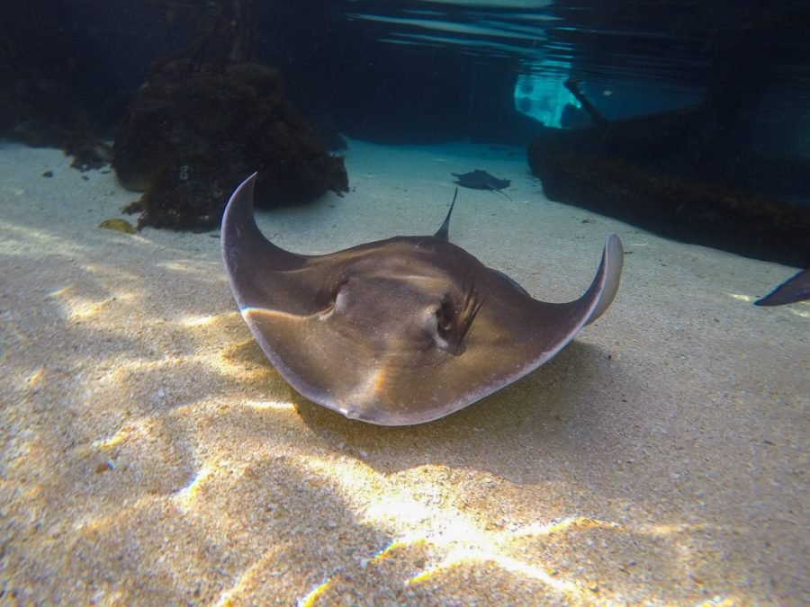

This project investigated the aerodynamic performance of a bio-inspired Blended Wing Body (BWB) unmanned aerial vehicle. The aircraft geometry was designed using SolidWorks and analysed through Computational Fluid Dynamics simulations in ANSYS Fluent.
The CFD model was validated through mesh convergence studies and external benchmarking to ensure reliable simulation results. A parametric investigation was conducted on winglet sweep angles to determine the configuration that maximised the lift-to-drag ratio, demonstrating improved aerodynamic efficiency compared with conventional aircraft layouts.
